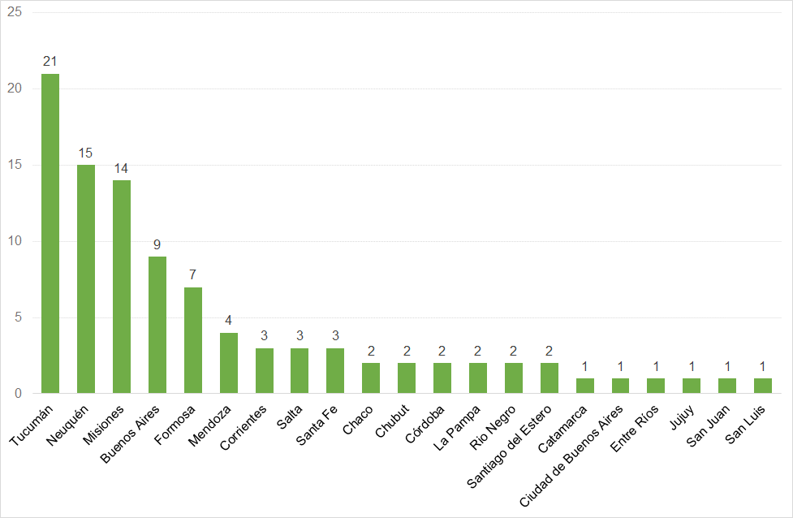
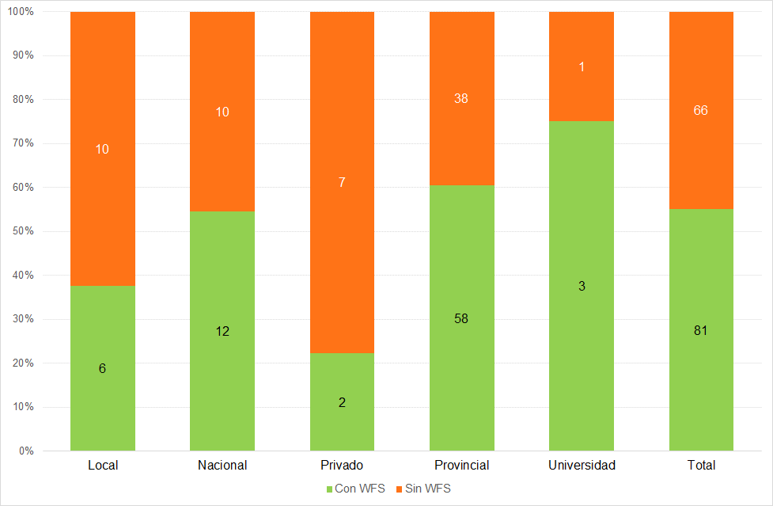
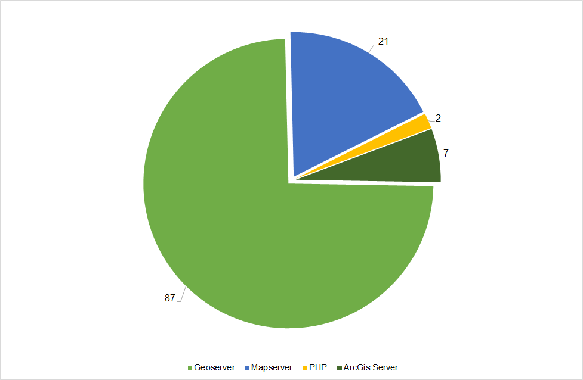
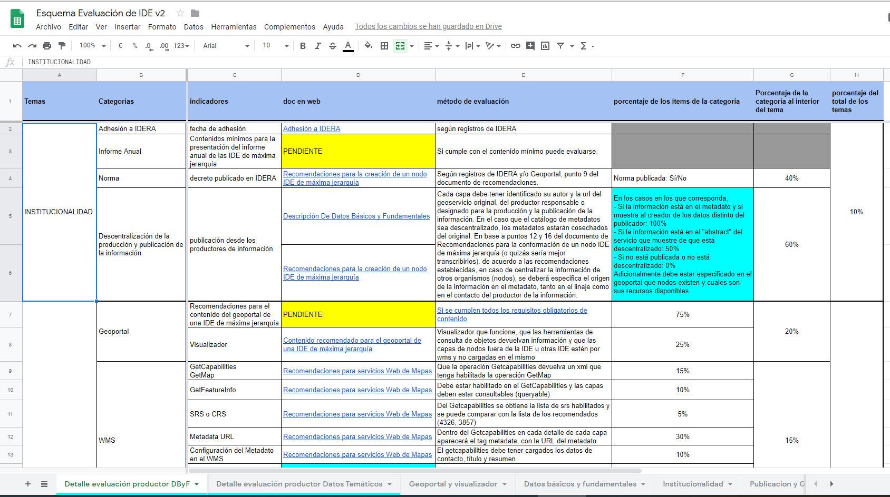
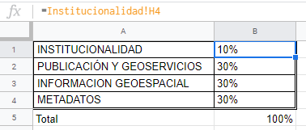
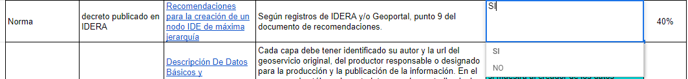
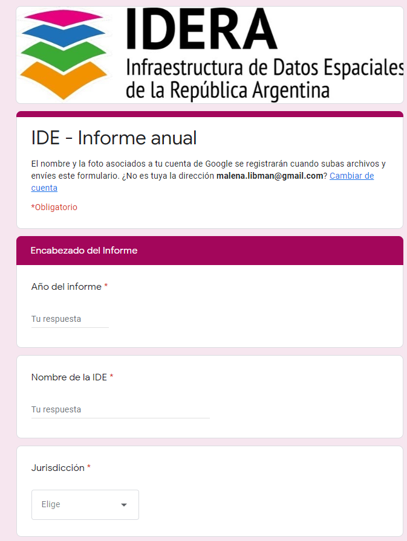
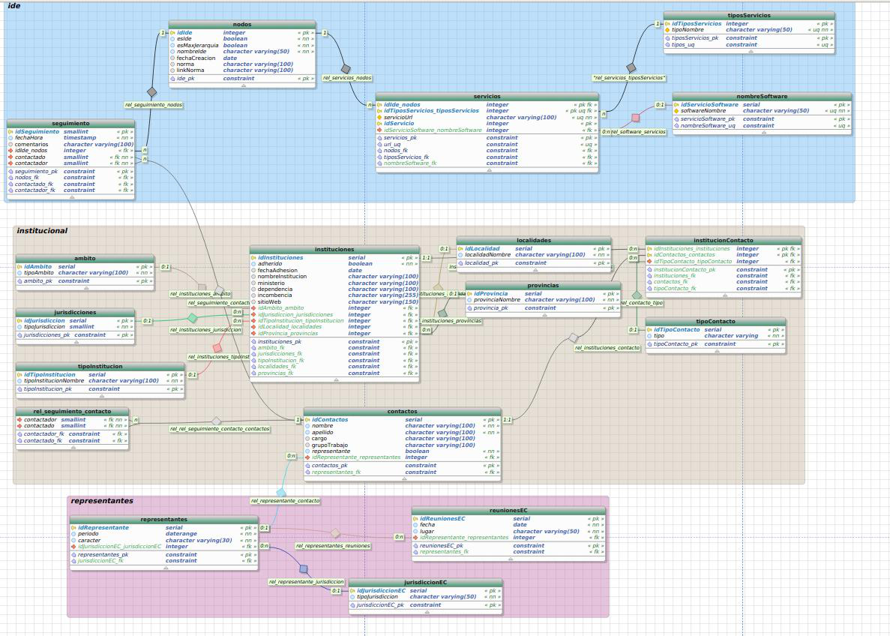
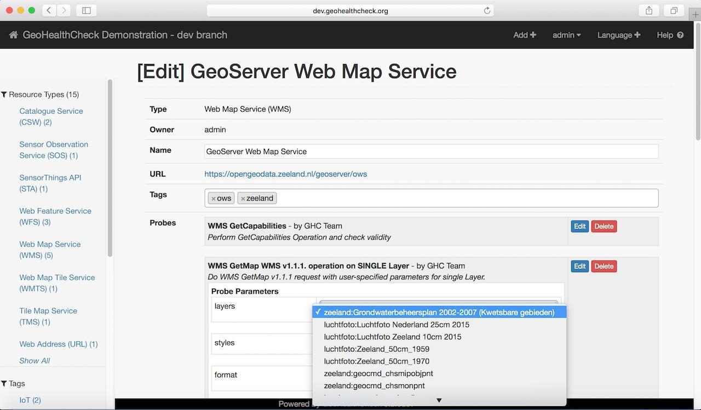

La evaluación de IDE de IDERA¶
Antecedentes¶
IDERA¶
Según consta en su sitio web, la Infraestructura de Datos Espaciales de la República Argentina (IDERA) es “una comunidad de información geoespacial que tiene como objetivo propiciar la publicación de datos, productos y servicios, de manera eficiente y oportuna como un aporte fundamental a la democratización del acceso de la información producida por el Estado y diversos actores, y al apoyo en la toma de decisiones en las diferentes actividades de los ámbitos público, privado, académico, no gubernamental y sociedad civil1.
En términos organizacionales, según el reglamento de funcionamiento publicado en IDERA (2015), la Coordinación Ejecutiva de IDERA está a cargo del Instituto Geográfico Nacional, cuyas funciones son facilitar el trabajo que se realiza desde los Grupos de Trabajo y el Equipo Coordinador para implementar sus decisiones; recibir y resguardar la documentación; celebrar convenios; y convocar a reuniones.
Para articular el trabajo, el Equipo Coordinador de IDERA agrupa a representantes de todas las jurisdicciones y niveles de gobierno del país, así como de los consejos federales de Catastro y Planificación y de las universidades públicas, teniendo por responsabilidades generales la conducción del funcionamiento de IDERA y la articulación con los Grupos de Trabajo2.
Una parte de las actividades de IDERA es realizada por Grupos de Trabajo de libre participación. Cada grupo tiene una serie de metas y objetivos planificados anualmente y genera documentos, recomendaciones, estándares y productos necesarios para que IDERA funcione y sirva a las IDE del país. Los grupos Marco Institucional; Academia y Ciencia; Capacitación; Difusión y Comunicación se orientan más a cuestiones institucionales. Los grupos Metadatos; Tecnología y Desarrollo; e Información Geoespacial realizan las adaptaciones locales de los estándares internacionales, las cuales son volcadas en documentos y recomendaciones que son las que se consideran en la Evaluación de IDE. El Grupo Marco Institucional fue el encargado de diseñar el procedimiento de la Evaluación en conjunto con personal de la Coordinación Ejecutiva de IDERA. Dentro de cada uno de los grupos se elige un representante que lo coordine y lo represente ante el Equipo Coordinador.
Estudio previo de los nodos IDE¶
Como primer antecedente en materia de evaluación, la Coordinación Ejecutiva de IDERA realizó un trabajo de seguimiento y monitoreo de los nodos IDE existentes en el país desde 2014 a 2017. Entendiendo a los nodos como cada uno de los organismos que publica información geográfica, independientemente de si existe una IDE superior que los aúne.
El trabajo surgió por la necesidad de conocer qué organismos de Argentina, sin importar su jurisdicción o nivel en el organigrama, publicaban información geográfica y en qué estado de desarrollo de la IDE se encontraban. Inicialmente se trató de mantener la información publicada por IDERA actualizada en su página web y de conocer las necesidades de las IDE del país.
El seguimiento se realizó relevando los datos comunes a todas las IDE, links de acceso, tipo y jurisdicción, software utilizado, estado de apertura y observaciones sobre su funcionamiento. A partir de estos datos es que se analizaron los resultados, para encontrar las problemáticas más comunes en la implementación de las IDE y para generar las variables de la evaluación.
De un total de 147 nodos IDE que formaban parte de IDERA en 2017 (que se detallan en el anexo del presente trabajo) según se advierte en el siguiente gráfico, casi dos tercios correspondían a organizaciones gubernamentales de nivel provincial, un séptimo era del gobierno nacional y un décimo municipales, con una participación mínima en el total del sector privado y de las universidades.
Gráfico 1 - Cantidad de Nodos IDE por jurisdicción

Fuente: elaboración propia en base al relevamiento realizado por el Instituto Geográfico Nacional
En 2017 (Gráfico 2) la mayoría de las provincias relevadas se encontraban representadas por 1 o 2 nodos IDE, pero las provincias de Misiones, Neuquén y Tucumán mostraban una infraestructura muy descentralizada, siendo esta última la que más nodos tenía (21). También las provincias de Buenos Aires, Mendoza y Formosa habían desarrollado más de tres nodos, a fin de no centralizar la información.
Gráfico 2 - Cantidad de Nodos por provincia

Fuente: elaboración propia en base al relevamiento realizado por el Instituto Geográfico Nacional
Tal como se observa en el Gráfico 3, poco más de un tercio de los organismos relevados poseían un catálogo de metadatos que permitiese el descubrimiento de la información publicada. Así, el 63% de los nodos IDE registrados no lo habían implementado, a pesar de ser una herramienta esencial dentro de una IDE.
Gráfico 3 - Cantidad de nodos por disponibilidad de Catálogo de Metadatos

Fuente: elaboración propia en base al relevamiento realizado por el Instituto Geográfico Nacional
Del análisis de la disponibilidad de geoservicios de visualización de capas (WMS) que vemos en el Gráfico 4, se advierte que todavía existían muchas IDE que no publicaban WMS, aunque la gran mayoría ya había implementado esta cuestión básica para una IDE.
El mayor inconveniente residía en la falta de geoservicios de descarga (WFS), tal como muestra el Gráfico 5, ya que en casi la mitad de las IDE relevadas no se encontraba disponible este servicio.
Gráfico 4 - Cantidad de nodos por disponibilidad de Servicio de visualización de WMS

Fuente: elaboración propia en base al relevamiento realizado por el Instituto Geográfico Nacional
Gráfico 5 - Cantidad de nodos por disponibilidad de Servicio de descarga de capas WFS

Fuente: elaboración propia en base al relevamiento realizado por el Instituto Geográfico Nacional
Un tema de gran importancia en la comunidad de IDERA es lograr que las implementaciones IDE sean lo más sustentables posibles, para ello se recomienda el uso de software libre y de código abierto. Así, se observa en el Gráfico 6 que la gran mayoría de los organismos eligían dos de las más populares herramientas de servidores de mapas de este tipo como son Geoserver3 y MapServer4, aunque algunos organismos aún usaban programas pagos, como ArcGIS Server5.

Fuente: elaboración propia en base al relevamiento realizado por el Instituto Geográfico Nacional
En el análisis de la estandarización de la publicación de la información, resulta relevante que las herramientas implementadas para dicha tarea se personalicen para que posean los datos correspondientes al organismo que realiza la publicación de la información. Una de las fallas recurrentes son los datos incompletos asociados al Servicio WMS, ya que, por no personalizarse con la información del organismo, muchos geoservicios quedan nombrados de manera predeterminada como “Geoserver Web Map Service”, como se ve en el Gráfico 7, lo que los hace difícil de identificar y distinguir.
Gráfico 7 - Cantidad de nodos por personalización de los Metadatos de Servicio WMS

Fuente: elaboración propia en base al relevamiento realizado por el Instituto Geográfico Nacional
Como parte de las tareas dirigidas a facilitar el descubrimiento y el acceso a la información publicada por sus integrantes, IDERA realizó en 2016 la instalación de un catálogo de metadatos propio con el software Geonetwork. Desde el mismo es posible “cosechar” la información publicada a través de los geoservicios, a fin de que sea más fácil encontrarla para los usuarios, entre otros beneficios. En esta tarea es que se cosecharon los geoservicios de visualización WMS y de metadatos CSW de los organismos que los tienen disponibles. De esta manera, además de poder crear registros de metadatos para todas las capas existentes, aún si el nodo IDE no tiene su propio servicio de catálogo, se encontró que muchos servicios, en particular los WMS, tenían problemas de funcionamiento, lo que imposibilitaba su uso frecuentemente, como vemos en el Gráfico 8.
Gráfico 8 - Errores en la cosecha de geoservicios por tipo de fuente de datos

Fuente: elaboración propia en base al relevamiento realizado por el Instituto Geográfico Nacional
Del seguimiento de nodos a la necesidad de su evaluación¶
A partir de la experiencia de seguimiento de nodos referida, surge que los niveles de aplicación de los estándares de IDERA, son muy heterogéneos. Ello ha permitido identificar la existencia de muchas oportunidades de mejora en los nodos IDE evaluados.
Además de estos resultados del seguimiento y monitoreo de los nodos de IDERA, se destaca como otro hito muy importante en el proceso previo al desarrollo de la evaluación de IDE de IDERA, el pedido por parte del Equipo Coordinador al Grupo de Trabajo Marco Institucional de generar algún sello o certificación de que las IDE cumplen con los estándares de IDERA.
Así, se llegó a la conclusión de que se tornaba imprescindible definir una metodología de evaluación de la aplicación de las recomendaciones generadas por IDERA, que apunte a lograr su plena y correcta implementación por parte de todos sus integrantes, como una forma de garantizar el nivel de interoperabilidad que requiere toda IDE.
A partir de estos antecedentes, el proceso del que surge la evaluación de IDE de IDERA ha incluido, por parte del Grupo de Trabajo Marco Institucional, una importante labor de desarrollo preliminar de ejemplos de posibles criterios y formas de calificar, originalmente, a las IDE que formen parte de IDERA.
Contando con este importante trabajo previo, la Coordinación Ejecutiva de IDERA procuró analizar los componentes de las IDE y los estándares y recomendaciones publicados por IDERA, para entender cuáles eran las variables con mayor capacidad para dar cuenta del estado de situación de las IDE en materia de cumplimiento de dichos estándares y recomendaciones y que, a su vez, resultasen factibles de traducirse en indicadores de cara a su evaluación.
A su vez, IDERA busca que la evaluación genere una oportunidad para desarrollar actividades de capacitación dirigidas a quienes integran las diversas IDE, en relación a la adecuada implementación de las recomendaciones, en el marco de un acompañamiento institucional.
IDERA espera, de este modo, contar con más y mejores herramientas para acompañar a las IDE, tanto consolidadas como incipientes, en la implementación de los estándares establecidos, de forma continua y a largo plazo, a través de una metodología que pueda utilizar tanto IDERA como sus integrantes para autoevaluarse.
Desde IDERA eso permite destacar a quienes generen implementaciones estandarizadas e interoperables acordes con sus recomendaciones y, en el otro extremo de la escala de valoración, identificar las experiencias que requieren un mayor esfuerzo en pos de transformar sus debilidades en fortalezas.
Primera versión¶
Del estudio del Procedimiento para la Evaluación de una IDE desarrollado por IDERA, puede afirmarse que la metodología elaborada tiene por objeto realizar la evaluación y caracterización de cada IDE, en términos del grado de cumplimiento de los estándares que han sido definidos en los documentos y recomendaciones de IDERA.
En la propuesta de procedimiento original se propone comenzar a evaluar únicamente las IDE que se encuentren adheridas a IDERA, que posean servicio de visualización de mapas WMS, servicio de catálogo de metadatos CSW, Geoportal, el informe anual presentado y que sean de máxima jerarquía en su jurisdicción de ministerios nacionales, provincias, municipios y universidades públicas. Los señalados constituyen los elementos mínimos que tiene en cuenta IDERA para que una IDE debe tener para considerarse como tal y en funcionamiento.
Ello obedece a la necesidad de reducir la cantidad de IDE a controlar en comparación con los nodos evaluados en la experiencia previa de seguimiento. También se busca que cada IDE de máxima jerarquía se responsabilice por la aplicación de los estándares por parte de los nodos que la integran.
Dicha metodología considera cuatro temas que a su vez se dividen en categorías, donde cada una es representada por indicadores, definidos por recomendaciones y estándares publicados por IDERA y en función de los cuales se articula la metodología de evaluación:
Institucionalidad (10%): aspectos referidos a lo organizacional. Acorde a lo desarrollado en el marco teórico respecto a la definición de una IDE, resulta central para cada IDE contar con los acuerdos que consideran los indicadores que se detallan a continuación, en línea con lo definido por la IDE nacional.
Así, sus categorías, siguiendo los indicadores propuestos por IDERA para evaluar la institucionalidad, son: Adhesión a IDERA, Informe anual, Norma constitutiva, Descentralización de la producción y Publicación de la información.
El primero de estos indicadores da cuenta de si el organismo se encuentra adherido a IDERA y de la fecha en la que se firmó la correspondiente carta de adhesión. La fuente de dicho dato son los registros que mantiene la Coordinación Ejecutiva de IDERA. Vale recordar, que ello es requisito para ser susceptible de ser evaluada.
El siguiente indicador es el Informe anual que debe presentar cada IDE a fin de caracterizarla y conocer sus avances y situación actual. Este informe permite conocer a la IDE y tener en cuenta sus particularidades a la hora de hacer la evaluación y también es un requisito para poder ser evaluada.
A continuación, se analiza si la IDE ya cuenta con algún tipo de normativa constitutiva, esta información puede provenir del Informe anual, de los registros de la Coordinación Ejecutiva de IDERA o de la página del Geoportal de la IDE. Ello es importante, tanto por dotar de una mayor institucionalidad a los acuerdos previamente referidos, como por definir las incumbencias de la IDE y otros aspectos de su organización, a través de un marco legal. Si bien no garantiza su perdurabilidad en el tiempo, la existencia de un marco legal le otorga mayor grado de institucionalidad y formalidad, lo cual puede contribuir a mayores facilidades para obtener y sostener los recursos necesarios para el funcionamiento de una IDE.
Por último, se analiza si la estructura de la IDE cumple con las recomendaciones sobre el trabajo descentralizado. En particular, se busca asegurar que la coordinación de cada IDE no concentre la información de todas las áreas de la jurisdicción, sino que cada una tenga el reconocimiento correspondiente por los datos o la responsabilidad de publicarlos como nodo. Dado que ello implica señalar con precisión quién es legalmente responsable de la información publicada y de su veracidad y, además, permite evitar que la centralización de la información lleve a su veloz desactualización por falta de una comunicación fluida entre los distintos actores que la generan. Una de las características de una IDE es justamente la facilidad de contar con herramientas que permiten la actualización sencilla y permanente de la información publicada por parte de sus productores.
Publicación y Geoservicios (30%): considera cómo está publicada la información geográfica y si dicha publicación resulta utilizable para los usuarios. Dado que, como se señaló en el marco teórico, una IDE tiene que poder generar algunas acciones sobre la información producida. Y la publicación y los geoservicios es la forma en que se permite el acceso, análisis y uso de dicha información a sus diversos usuarios.
Las categorías correspondientes a este tema son: Geoportal, Servicios de Visualización de Mapas WMS, Descarga de Datos Básicos y Fundamentales (DByF) por Servicio de Descarga WFS, Servicio de Descarga de capas WFS, Servicio de Catálogo de metadatos CSW y Datos Abiertos o Descarga Masiva.
En la categoría de Geoportal, se analiza si cumple con las recomendaciones de contenido, considerando al geoportal en sí mismo, por un lado, y al visualizador y sus elementos mínimos, por el otro. Si bien IDERA ha elaborado un documento de recomendaciones sobre Geoportal, aún no lo ha puesto a disposición de la comunidad. Dado que el Geoportal es la puerta de entrada a la IDE que permite acceder a todos los datos y servicios que ofrece, se busca, justamente, garantizar que los contenidos resulten accesibles para el usuario, desde el nivel básico.
La categoría de Servicios de Visualización de Mapas WMS busca establecer, además de la publicación en el geoportal del enlace de acceso, su correcto funcionamiento y configuración a través del análisis de las respuestas a las peticiones Capacidades del Servicio (GetCapabilities), Visualización del Mapa (GetMap) y Consulta de atributos del objeto (GetFeatureInfo). Adicionalmente, se analiza si el servicio está siempre disponible o si suele tener inconvenientes a lo largo del tiempo, a través del monitoreo de las respuestas al menos dos veces al día.
El testeo de estas operaciones básicas del servicio WMS busca asegurar que los usuarios puedan acceder a este servicio de visualización de mapas en cualquier día y horario. Ello es importante, porque la accesibilidad para los usuarios es un objetivo básico para cualquier IDE.
En su contenido, respecto a las capacidades del servicio, debería tener:
-
Las proyecciones recomendadas habilitadas (SRS), de modo tal de contemplar los dos sistemas de referencia espacial más utilizados a nivel mundial (WGS84 y Web Mercator) y el marco de referencia POSGAR 2007 a fin de representar al territorio nacional en sus correctas proporciones.
-
La URL al metadato en el catálogo (MetadataURL), a fin de poder acceder a los metadatos de la capa desde el servicio WMS.
-
Los metadatos completos del servicio en sí (nombre del servicio y datos de contacto de la IDE) para visualizar los datos de referencia de la IDE al usar el geoservicio.
-
El estilo de las capas (SLD), acorde a lo pedido por IDERA (aunque los estilos de base para las capas del catálogo no han sido publicados todavía por IDERA) con el objetivo de normalizar el aspecto de las capas de información del catálogo para todas las IDE, para su armoniosa visualización de conjunto, sobre todo en el visualizador de IDERA.
Así como resulta básico que los usuarios puedan acceder al servicio WMS, también es crucial garantizar que puedan cumplir con las recomendaciones de IDERA mínimas que apuntan al correcto funcionamiento y la máxima interoperabilidad entre servicios.
Al respecto de la Descarga WFS de DByF, se plantea la existencia de un link por separado del resto de los geoservicios para las capas de información geográfica que entren en dicha categoría del Catálogo de Objetos Geográficos de IDERA6.
Ello es importante para que el usuario pueda acceder con mayor facilidad a estas capas básicas que IDERA ha definido como las de mayor importancia.
En relación con el servicio de descarga WFS, debe tener su enlace publicado en el Geoportal. Ello es un elemento muy relevante en términos de transparencia, en tanto demuestra voluntad por potenciar la usabilidad de los datos y facilitar su pleno acceso a los usuarios.
En cuanto al servicio de metadatos CSW, debe poder accederse al mismo, que debe tener todas las capas que existan en el WMS cargadas en el catálogo. En este caso, la importancia de estos elementos radica en que permiten conocer la existencia de los datos en sí, a través del catálogo, facilitando dos de las acciones básicas de que debe permitir una IDE, como son la búsqueda y el descubrimiento de la información. Además, aportan información clave para su correcto uso, tal como su grado de actualización, autor y otras cuestiones significativas (no existe aún un documento de IDERA que detalle cómo se configura exitosamente el servicio CSW como hay para WMS).
A la vez que debe existir un link a un CSW que filtre las capas de DByF por separado, teniendo en cuenta que se recomienda la publicación, mediante descarga WFS, de dichas capas.
En la última categoría se evalúa la existencia de acceso a la información publicada en formato de datos abiertos, ya sea como un Portal de Datos Abiertos (Junar7 o CKAN8 son algunos ejemplos) o como links de descarga masiva.
Información Geoespacial (30%): es la categoría en la cual la información publicada es evaluada en sí misma, capa por capa. Las categorías que se analizan son: DByF publicados, Datos Temáticos Publicados, Linaje completo de Metadatos, Normalización de nombres de capas y Actualización de los datos. Ello es importante, porque el tener en cuenta las recomendaciones para la publicación de la información geográfica, tiene por objetivo garantizar que los datos estén estandarizados y sean utilizables.
En cuanto a los DByF, se observa si es que se encuentran publicados y si los datos están normalizados de acuerdo al catálogo de objetos geográficos de IDERA; en cuanto a los nombres de las capas, su estructura de atributos y la cobertura de la jurisdicción correspondiente a la IDE.
La importancia de ello, radica justamente, en que se trata de los datos de mayor relevancia, según lo ha establecido IDERA, más allá de que todavía no se haya publicado un documento que defina qué organismos son responsables de la producción y la publicación de cada uno de ellos. Tampoco IDERA ha detallado en el documento que los describe, los criterios a utilizar para establecer la calidad de dichos DByF.
Para los datos temáticos, se analiza específicamente sí coinciden con un objeto del catálogo publicado por IDERA9 y si respetan su estructura. Estas condiciones son básicas para garantizar la interoperabilidad.
Con respecto al linaje, si bien es información que contiene el metadato, es importante conocer los procesos de obtención de la información y su origen. Vale aclarar que, si bien ello no es obligatorio en el perfil de metadatos de IDERA, se considera un elemento indispensable para que el usuario pueda evaluar la calidad de la información publicada, sus alcances y limitaciones.
En la categoría de normalización de nombres de capas, se analiza que, de acuerdo a las recomendaciones, no posean caracteres especiales denominados ANSI (comas, puntos, espacios, acentos, entre otros), que los títulos de las capas sean acordes al catálogo (según corresponda) y que no haya más de una capa por objeto del catálogo. Ello es imprescindible para garantizar que la información sea identificable como tal de acuerdo al catálogo.
La última categoría busca chequear que la fecha de actualización de la información coincida con el período de actualización previsto por el productor del dato y consignada en el metadato de cada objeto. Estos dos valores se encuentran consignados en los metadatos. Este cruce es necesario para diferenciar los datos que se encuentran actualizados de aquellos que presentan un retraso en su actualización, situación que es importante a la hora de utilizar la información.
Metadatos (30%): La documentación de los datos y de los servicios publicados debe cumplir con los contenidos mínimos de acuerdo a los perfiles de metadatos publicados por IDERA. Las categorías que se analizan son: Validación y Contenido. Ello es crucial para que el dato esté correctamente documentado de forma tal que el usuario pueda conocer si cumple con sus necesidades.
La validación se realiza usando como base el correspondiente perfil de metadatos de IDERA y busca asegurar que dichos metadatos tengan completos, como mínimo, sus elementos obligatorios.
En cuanto al contenido, se espera que los metadatos tengan la fecha de actualización (para que sea factible evaluar la categoría del tema anterior), que figure el responsable de la producción del dato y el generador del metadato, que estén completos y no haya datos por defecto en los metadatos de servicios, que el título del metadato coincida con el del geoservicio y el catálogo de objetos, ya sea de IDERA o el propio de la IDE y que se encuentre el link al recurso, ya sea de descarga directa o el geoservicio.
La aplicación de la metodología requiere tener la información básica sobre el funcionamiento de la IDE, por lo que estipula un pedido de informes desde IDERA. El siguiente paso en el procedimiento es la evaluación, indicador por indicador, a fin de tener un primer resultado, que luego se utilizará para asignar un valor de puntaje a cada ítem.
El informe consta de unas 23 preguntas sobre Institucionalidad, Publicación y Geoservicios y Metadatos, que apuntan a caracterizar a la IDE y permitir un análisis más personalizado, de la misma forma en que se aplica para eSDI-Net+ de acuerdo a Rix et al (2011), donde se generaba una especie de tarjeta de identificación de la IDE. El planteo inicial en el desarrollo de la evaluación era que esta información se recopilara en una Base de Datos de IDE de Argentina, para continuar con el monitoreo inicial, más allá de la regularidad de las evaluaciones, permitiendo así a la Coordinación Ejecutiva de IDERA acompañar a las IDE en su desarrollo y evolución. Esto se asimila al proyecto eSDI-Net+, que generó una base de datos10 que es pública, a fin de mejorar la operación de las IDE subnacionales de Europa.
En esta primera versión, con las herramientas disponibles, el proceso no se encuentra automatizado en ninguna de sus tareas de relevamiento de datos, usando como apoyo la información contenida en el informe descrito en el párrafo precedente, así como los relevamientos previos de IDERA.
Para llegar al puntaje final correspondiente a cada IDE, se considera la situación de cada uno de los indicadores descritos, tomando como referencia los documentos elaborados por los Grupos de Trabajo (disponibles en el sitio web de IDERA). Así, se asigna a la IDE, para cada indicador un puntaje acorde a su cumplimiento, luego se pondera cada variable para arribar al valor correspondiente a cada categoría y, finalmente, se pondera cada categoría, para obtener el valor global de cada IDE. Tales ponderaciones obedecen a cuán importante considera cada elemento (indicador y categoría), actualmente, la comunidad de IDERA.
Una vez que se obtiene el valor total de cada IDE evaluada, se elabora el correspondiente reporte, explicando dicho resultado, que debería ser revisado por actores clave elegidos en el ámbito del Equipo Coordinador de IDERA.
Son estos actores quienes deben hacer una devolución, de modo tal que ese reporte, validado y enriquecido por sus revisores, se remita a la IDE evaluada, a los fines de que pueda conocer sus resultados y desarrollar las acciones que considere pertinentes para mejorar su funcionamiento.
Cuadro 1 - Indicadores del tema Institucionalidad
| Categoría | Indicadores | Documento publicado | Método de evaluación | Calificación | Peso categoría | Peso tema |
|---|---|---|---|---|---|---|
| Adhesión a IDERA | Fecha de adhesión | Adhesión a IDERA | según registros de IDERA | 10% | ||
| Informe Anual | Presentado de acuerdo a estándar de IDERA | Contenidos mínimos para la presentación del informe anual de las IDE de máxima jerarquía | Si cumple con el contenido mínimo puede evaluarse. | |||
| Norma | Decreto publicado en IDERA | Recomendaciones para la creación de un nodo IDE | Según registros de IDERA y/o Geoportal, punto 9 | Norma publicada: Sí/No | 40% | |
| Descentralización de la producción y publicación de la información | Publicación desde los productores de información | Descripción De Datos Básicos y Fundamentales Recomendaciones para la creación de un nodo IDE de máxima jerarquía |
Cada capa debe tener identificado su autor y la URL del geoservicio original, del productor responsable o designado para la producción y la publicación de la información. En el caso que el catálogo de metadatos sea descentralizado, los metadatos estarán cosechados del original. En base a puntos 12 y 16 del documento de Recomendaciones para la conformación de un nodo IDE de máxima jerarquía. De acuerdo a las recomendaciones establecidas, en caso de centralizar la información de otros organismos (nodos), se deberá especificar el origen de la información en el metadato, tanto en el linaje como en el contacto del productor de la información | -Si la información está en el metadato: 100% - Si la información está en el "abstract" del servicio: 50% - Si no está publicada: 0% Adicionalmente debe estar especificado en el geoportal que nodos existen y cuáles son sus recursos disponibles | 60% |
Fuente: elaboración propia en base a IDERA
Cuadro 2 - Indicadores del tema Publicación y Geoservicios
| Categoría | Indicadores | Documento publicado | Método de evaluación | Calificación | Peso categoría | Peso tema |
|---|---|---|---|---|---|---|
| Geoportal | Recomendaciones para el contenido del geoportal | Contenido recomendado para el geoportal de una IDE de máxima jerarquía | Si se cumplen todos los puntos obligatorios | 75% | 20% | 30% |
| Visualizador | Contenido recomendado para el geoportal de una IDE de máxima jerarquía | Visualizador que funcione, que las herramientas de consulta de objetos devuelvan información y que las capas de nodos fuera de la IDE u otras IDE estén por WMS y no cargadas en el mismo (esto se chequea en el Informe Anual, donde debería indicarse cómo se está organizado a nivel software y publicación) | 25% | |||
| WMS | GetCapabilities GetMap | Recomendaciones para servicios Web de Mapas | Debe devolver un XML bien formado. Debe tener completados los datos que conforman los metadatos automáticos del servicio: título, resumen, contacto | 15% | 15% | |
| GetFeatureInfo | Recomendaciones para servicios Web de Mapas | Debe devolver un XML bien formado | 10% | |||
| SRS | Recomendaciones para servicios Web de Mapas | Del GetCapabilities se obtiene la lista de SRS habilitados y se puede comparar con la lista de los recomendados | 5% | |||
| SLD | Recomendaciones para servicios Web de Mapas | Verificar visualmente si coincide con lo pedido | 2% | |||
| Metadata URL | Recomendaciones para servicios Web de Mapas | Dentro del GetCapabilities si aparece con el tag |
30% | |||
| Metadatos del Servicio en WMS | Recomendaciones para servicios Web de Mapas | Observando el GetCapabilities debe tener cargados los datos de contacto, título y resumen | 8% | |||
| Salud del servicio | No hay un documento que estipule un mínimo | Se debe realizar con un monitor de Geoservicios, con chequeos al menos dos veces por día | 30% | |||
| WFS DByF | URL por separado | Normalización de Capas para Servicios OGC Lineamientos para el acceso, difusión, uso e interoperabilidad de información geoespacial |
Debe existir la URL publicada en el geoportal, la salud se puede evaluar en el monitor de geoservicios | Sí/No | 30% | 30% |
| WFS | URL | Configuración WFS en Geoserver | Debe existir la URL publicada en el geoportal, la salud se puede evaluar en el monitor de geoservicios | Sí/No | 5% | |
| CSW | Todas las capas | No hay documento de recomendaciones | Debe tener por cada capa publicada un registro de metadatos | 75% | 20% | |
| CSW DByF | generar en Geonetwork el CSW filtrado | Mismas capas que en el WFS de DByF | 25% | |||
| Datos Abiertos o Descarga Masiva | Todas las capas | Lineamientos para el acceso, difusión, uso e interoperabilidad de información geoespacial | Se puede sugerir que en ausencia de un sistema de datos abiertos como junar o ckan, se usen los links de descarga WFS | Sí/No | 10% |
Fuente: elaboración propia en base a IDERA.
Cuadro 3 - Indicadores del tema Información Geoespacial
| Categoría | Indicadores | Documento publicado | Método de evaluación | Calificación | Peso categoría | Peso tema |
|---|---|---|---|---|---|---|
| DByF publicados | Publicados | Descripción de Datos Básicos y Fundamentales | Si el DByF coincide con la estructura planteada en el documento (nombre, atributos) | 65% | 50% | 30% |
| Acorde a Catálogo de Datos | Descripción del Catálogo de Objetos Geográficos | Manual, evalúa nombre de las capas, existencia y coherencia de los atributos con el Catálogo y completitud (en cuanto a cobertura completa) | 35% | |||
| Datos Temáticos Publicados | Catálogo de Objetos Geográficos de IDERA | Descripción del Catálogo de Objetos Geográficos | Si el dato temático coincide con un objeto del catálogo, debe estar acorde a la estructura del mismo (nombre, atributos) | Sí/No | 5% | |
| Linaje completo en Metadatos | Perfil de metadatos | Buenas Prácticas en Metadatos | Mínimamente que posea los elementos obligatorios | Sí/No | 10% | |
| Normalización de Nombres de capas | Nombre sin caracteres especiales Título de acuerdo a catálogo 1 capa = 1 objeto del catálogo |
Normalización de Capas para Servicios OGC | Debe cumplir con las condiciones de la recomendación del documento | Porcentaje de capas publicadas que cumplen cada recomendación | 30% | |
| Actualización | Fecha de actualización del Recurso | Perfil de Metadatos para Datos Vectoriales | Verificación en el metadato de la última fecha de actualización del recurso y del período de actualización | 100% si es menos de un año | 5% |
Fuente: elaboración propia en base a IDERA.
Cuadro 4 - Indicadores del tema Metadatos
| Categoría | Indicadores | Documento publicado | Método de evaluación | Calificación | Peso categoría | Peso tema |
|---|---|---|---|---|---|---|
| Validación | ISO 19139 | IDERA - GitHub | Validador de Geonetwork con la plantilla de IDERA | 30% | ||
| Contenido | Fecha de Actualización | Perfil de Metadatos para Datos Vectoriales | Generados por el catálogo al momento de insertar el metadato o su modificación | Sí/No | 5% | |
| Responsable | Perfil de Metadatos para Datos Vectoriales | Verificar el responsable del dato y el generador de metadato | Cantidad de capas | 30% | ||
| Metadatos del Servicio en Catálogo de metadatos | (en revisión por Grupo Metadatos) | Metadato creado y con elementos obligatorios completos, no por defecto | Cantidad de capas | 15% | ||
| Título coincidente con geoservicio y Catálogo de datos | (en revisión por Grupo Metadatos) | Verificación con el WFS DByF y el catálogo, a partir del CSW de DByF | Cantidad de capas | 20% | ||
| Link al Recurso | Buenas Prácticas en Metadatos | Comprobar que el link del recurso del Metadato si posee un geoservicio (WMS / WFS) en el Servidor de Mapa URL Metadata haga referencia al metadato donde se está analizando este link | Sí/No | 30% |
Fuente: elaboración propia en base a IDERA.
En un primer momento, a fin de analizar la pertinencia y utilidad de la evaluación desarrollada, como experiencia piloto se seleccionó la Infraestructura de Datos Espaciales de Tucumán (IDET), entre otros factores, por contar con cierta cultura de la evaluación, visible, por ejemplo, en el esfuerzo por desarrollar una evaluación propia para sus distintos nodos (incluyendo organizaciones de la sociedad civil y empresas), documentado en IDET (2017).
Como resultado de esa evaluación, según consta en el Acta de Reunión del Equipo Coordinador de IDERA del 9 de marzo de 2018, la IDET se encontraba en un excelente estado de cumplimiento de los estándares de IDERA, presentando un valor global de 75%.
Descomponiendo ese número general, se advierten mejores resultados en los temas de Información Geoespacial (83%) y Metadatos (87%) que en los de Institucionalidad (60%) y Publicación y Geoservicios (60%).
A su vez, como ejemplo del tipo de recomendaciones que permite la evaluación, para la mejora de las IDE, en el caso de la IDET, se señaló en cuanto a la Institucionalidad, la necesidad de continuar con el proceso de generación de una norma que le dé un marco legal a todo el trabajo que se está realizando; en cuanto a Publicación y Geoservicios, se planteó que el servicio WMS solamente tendría que agregar las proyecciones recomendadas a su configuración, ya que son necesarias para asegurar la interoperabilidad, además de poner en las capas las URL de los metadatos y normalizar los estilos.
Vale destacar que, en el proceso de esta prueba piloto, se presentaron sus resultados a los revisores del Equipo Coordinador, sin que se hayan registrado, por parte de los mismos, aportes relevantes.
Por otro lado, durante el dictado de (hasta ahora) dos ediciones del Seminario de IDE de la Licenciatura en Sistemas de Información Geográfica de la Universidad Nacional de Tres de Febrero, se ampliaron las observaciones piloto sobre la evaluación de IDE de IDERA, en especial sobre qué aspectos funcionaban mejor y en relación a cuáles presentaban mayores dificultades a la hora de aplicarla. Vale consignar que la autora del presente trabajo formó parte de estas experiencias (en 2018 como estudiante y en 2019 como auxiliar docente).
En ambas oportunidades, los estudiantes tuvieron la posibilidad de elegir las IDE sobre las que intentarían aplicar la metodología de evaluación detallada precedentemente. De muchas de estas experiencias (que incluyen también el Seminario de IDE de la Facultad de Filosofía y Letras de la Universidad de Buenos Aires dictado en 2019) han surgido interrogantes sobre el proceso y la metodología de evaluación que se han considerado en los análisis desarrollados en el presente trabajo.
Identificación de oportunidades de mejora¶
La Evaluación de IDE de IDERA, tal como ha sido formulada originalmente, presenta algunos aspectos muy positivos, como permitir cierta flexibilidad en la inclusión/modificación de indicadores y la posibilidad de desarrollar diferentes versiones (acorde con los avances de las IDE en la aplicación de los estándares y de IDERA en cuanto a la formulación de nuevas recomendaciones).
También resulta valiosa como contribución, si se piensa a la evaluación como herramienta para la mejora y, en la misma línea, se la enlaza con acciones tales como el desarrollo de capacitaciones personalizadas, acordes a las diversas necesidades específicas de las distintas IDE que forman parte de IDERA.
Para los propios organismos a cargo de las diferentes IDE que integran IDERA, la posibilidad de autoevaluación que surge de la metodología de evaluación de IDE desarrollada por IDERA, también ofrece una serie de beneficios.
Así, a partir de dicha autoevaluación, es posible detectar, en primer lugar y en forma sistemática, cuáles son los principales problemas que presenta la IDE en un determinado momento.
A su vez, sobre la base de dicho diagnóstico periódico, facilitado por las herramientas que brinda la autoevaluación, es que los organismos pueden tomar decisiones más informadas respecto a la priorización de esfuerzos en determinadas áreas, servicios y procesos, de cara al fortalecimiento de sus IDE.
Dichos esfuerzos incluyen cuestiones tales como la revisión de procedimientos, la optimización del hardware y del software y la capacitación del personal en las diversas tareas que hacen al funcionamiento de la IDE.
Para desarrollar y aprovechar mejor todas estas potencialidades de la evaluación de IDE de IDERA, es necesario señalar algunos problemas que presenta. Así, al momento de su formulación, se pensaba trabajar en ciertos aspectos que todavía no se han concretado, tales como la ausencia de algunos estándares que sustentan determinados indicadores de la evaluación, que aún no han sido formulados. De allí la necesidad de adaptar la metodología de evaluación a lo que realmente pueden hacer las IDE del país, en función de los estándares efectivamente aprobados por IDERA.
Surge entonces la necesidad de realizar una serie de preguntas en relación al efectivo funcionamiento de la Evaluación de IDE, dado que, tras la aprobación de su metodología por parte del equipo coordinador de IDERA y su testeo en diferentes oportunidades, se hicieron cada vez más visibles sus falencias y la necesidad de elaborar de herramientas o precisiones que faciliten su implementación.
¿Cómo se implementa la Evaluación de IDE de IDERA?¶
En el documento del procedimiento de evaluación (documento de trabajo que hasta el momento no fue publicado) se plantean una serie de pasos para el proceso de evaluación, así como una estructura de responsables para su implementación. Sin embargo, en la práctica, a pesar de que se hicieron algunas pruebas piloto, nunca se llevó a cabo el procedimiento de manera completa, e inclusive se ha discontinuado el seguimiento de los nodos IDE y el relevamiento de información periódica sobre su funcionamiento.
A su vez, hasta el momento no se implementó la evaluación, ya que es posible que dicha implementación haya resultado una carga excesiva para la Coordinación Ejecutiva de IDERA en los últimos años. Ello es visible en el hecho de que la Evaluación de IDE ha implicado un esfuerzo desmedido para la Coordinación Ejecutiva de IDERA, dado que para funcionar adecuadamente requiere de cierta masa crítica de personal calificado y dedicado a esta tarea, en un contexto de achicamiento del Estado y de restricciones para la contratación de personal, sumado a un consenso de los actores, que, si bien teóricamente se tiene, no se termina de concretar en la práctica.
Además, el esquema generado de variables e indicadores no ha resultado homogéneo en términos de su simplicidad y economía de recursos para el relevamiento de los respectivos datos, dado que subsisten demasiados procedimientos que implican mucho trabajo difícil de automatizar. Por ejemplo, la revisión de nombres y metadatos en el caso de la existencia de miles de capas, como en la IDET (para la que se hizo la prueba piloto), resulta excesiva como tarea de revisión de cada una para una sola persona y vuelve al procedimiento de evaluación muy costoso, engorroso e impreciso. En otros casos, algunas variables resultaron de muy compleja medición, tal como en lo que respecta a la salud de los servidores y a la aplicación de los estándares de estilos.
La prueba piloto demostró que la retroalimentación recibida en la instancia de revisión por parte de miembros del Grupo Coordinador fue muy pobre. Es de destacar que el trabajo voluntario, por más que esté enmarcado en instituciones u organismos a los cuales pertenecen los representantes, tiene la falencia de la imposibilidad de asignar plazos y obligatoriedad a la realización de las tareas.
Del mismo modo, han surgido muchas dudas entre los responsables de las IDE, en referencia a la forma de completar el informe descriptivo de la IDE durante la prueba piloto, por lo que su metodología de elaboración es pasible de mejoras tales como, por ejemplo, la realización de entrevistas entre el equipo de apoyo a la Evaluación de IDE de la Coordinación Ejecutiva de IDERA y los actores, para realizar su elaboración en forma conjunta.
¿La metodología de evaluación de IDERA permite conocer el grado de funcionamiento efectivo de una IDE?¶
Si bien la prueba piloto permitió comprobar la eficacia de la Evaluación de IDE para detectar que las recomendaciones y estándares de IDERA no estaban siendo aplicados en forma parcial o total por las IDE evaluadas, una de las grandes preguntas que no se logró responder con la aplicación de estas variables e indicadores es si la IDE en cuestión, en los hechos, se encontraba funcionando plenamente.
Se considera como IDE operativa a la que se encuentra generando y publicando nuevas capas de información geográfica, actualizando las existentes, manteniendo actualizado y completo el catálogo de metadatos y funcionando como una comunidad, con plena participación de sus integrantes en la toma de decisiones de la IDE.
En general, las iniciativas IDE se lanzan con mucha energía y recursos, y, a partir de la implementación de paquetes de software logran comenzar a funcionar, pero luego no les es posible perdurar en el tiempo, ya sea por la escasez de recursos económicos, por la movilidad del principal recurso humano que las lleva adelante, o por la pérdida de apoyo político.
Así, los ciclos de vida de las IDE, al depender de los apoyos políticos, de los recursos humanos y de la situación fiscal y macroeconómica, hacen que presenten muchas fluctuaciones en el tiempo, tanto ante cambios en el signo político del gobierno, como frente a modificaciones en los equilibrios internos entre los distintos grupos que integran una coalición gobernante. En algunos casos se comprobó que la existencia de una norma de creación de la IDE no garantiza su sostenibilidad a lo largo del tiempo, inclusive en el marco de una misma gestión de gobierno, lo cual tampoco asegura su operatividad.
Todas estas cuestiones no son, actualmente, captadas en forma adecuada por los indicadores y el procedimiento establecidos para la Evaluación de IDE. Ya que no basta con que una IDE esté funcionando para que efectivamente cumpla su rol de ser de utilidad para la sociedad. Es por esto que resulta complejo encontrar variables que realmente respondan a la pregunta sobre la operatividad de una IDE, debido a que no existe un standard ni recomendaciones al respecto en la bibliografía analizada, por lo que es muy difícil de medir. Se torna imprescindible, entonces, avanzar en este tema en conjunto con los actores en IDERA a fin de consensuar una definición respecto de qué se entiende por la operatividad de una IDE, de la cual surjan indicadores para medirla.
¿Cuentan los organismos con información clara y concreta acerca de los estándares de IDERA que deberían cumplir?¶
En gran medida, las variables consideradas en la Evaluación de IDE no solo se basan en los estándares generados por IDERA, sino que también remiten a las normas internacionales y a las condiciones básicas para permitir el funcionamiento de los elementos de la IDE.
Así, al momento de diseñar e implementar la Evaluación de IDE fue posible verificar la existencia de una serie de elementos cuyos estándares no habían sido todavía definidos por escrito por IDERA en sus recomendaciones e instructivos.
De esta forma, muchas cuestiones se daban por sentadas o por sabidas. Una muestra de ello es el caso del Grupo de Trabajo de Metadatos de IDERA, que generó a fines de 2017 un documento de Buenas Prácticas que aclara diversas dudas y pone por escrito muchas definiciones y procedimientos que antes se daban por sentadas, por ejemplo, en relación a cómo utilizar el linaje para la documentación de capas en los metadatos.
Hay otras variables que se considera necesario evaluar, dado que existen estándares de IDERA publicados, pero cuya implementación todavía no está ampliamente difundida o que los actores no consideran prioritaria, tales como el Catálogo de Objetos Geográficos o la discriminación de datos básicos y fundamentales. En este último caso, todavía no hay normativa de IDERA respecto a quien es el responsable principal de la producción y la publicación de cada uno de los datos básicos y fundamentales.
Por otro lado, subsisten una serie de falencias en relación con la publicación de esta documentación y normas por parte de IDERA. Si bien el sitio web de IDERA ha ido mejorando considerablemente con el tiempo, todavía resulta muy complejo encontrar los documentos necesarios a la hora de ver cómo solucionar los problemas detectados por los indicadores de la Evaluación de IDE. Ello puede obedecer a que la recomendación específica se pierde dentro de un documento de una gran extensión, a que dicho documento todavía no existe, a que existe pero se encuentra desactualizado, a que la página no presenta una forma sencilla, amigable e intuitiva para acceder a dicho recurso o, tal como se ha referido para el caso de los documentos de la Evaluación de IDE (procedimiento, esquema de variables, recomendaciones para geoportal y estructura del informe) han sido aprobados por el Equipo Coordinador de IDERA, pero, por inconsistencias en el proceso de publicación, no se encuentran disponibles en su sitio web.
Siendo la evaluación una herramienta tan esencial para la evolución de las IDE y para facilitar la labor de la Coordinación Ejecutiva de IDERA, el sentido del presente análisis crítico ha sido apuntalar y revitalizar su funcionamiento, atento a lo cual, y tomando como referencias las falencias detectadas, se ha elaborado una propuesta de mejoras para su implementación, pensadas como aportes que buscan contribuir al fortalecimiento de IDERA.
Propuesta de mejoras¶
Luego de todo el proceso referido, se observa que, pese a no presentarlo en forma explícita, la propuesta original de evaluación de IDE de IDERA tiene un sustento teórico bastante sólido y presenta una serie de elementos valiosos que dan lugar a proponer la introducción de mejoras para avanzar hacia su efectiva implementación.
Ello surge de analizar la primera versión de la evaluación de IDERA en conjunto con el seguimiento y monitoreo de las IDE y la experiencia piloto de evaluación, a la luz de los distintos casos de estudio investigados en el estado del arte del presente trabajo. Así, en la evaluación de la PSDI, de eSDI-Net+, de GIDEON, de INSPIRE y de la IDEC se aplica un análisis multicriterio y un esquema similar al de indicadores, categorías y temas propuesto por IDERA, para arribar a un resultado global correspondiente a cada IDE.
A su vez, IDERA también coincide con INSPIRE en la idea general de dar cuenta del grado de cumplimiento de las IDE de los estándares publicados y en el informe anual (denominado tarjeta de identificación de la IDE por INSPIRE).
El criterio general de la presente propuesta es, entonces, incidir positivamente sobre las oportunidades identificadas en la sección anterior. En tal sentido, se busca que la evaluación de IDE de IDERA contemple todas las acciones de una IDE en sus elementos básicos, siguiendo las definiciones de dichos conceptos desarrolladas en el marco teórico del presente trabajo.
Para ello, en primer lugar, se da cuenta de una serie de condiciones previas que permiten llevar adelante una mejor evaluación de las IDE, tales como el logro de acuerdos sólidos entre los actores, el fortalecimiento del equipo de apoyo de la Coordinación Ejecutiva de IDERA y el desarrollo y publicación de estándares, recomendaciones, instructivos y otra documentación relevante por parte de IDERA.
En segundo término, se desarrolla la propuesta de modificación de los indicadores de la evaluación de IDE de IDERA, eliminando algunos, mejorando conceptualmente otros y estableciendo un esquema diferenciado según se trate de una IDE de máxima jerarquía responsable de la producción de Datos Básicos y Fundamentales o no.
Finalmente, se realizan una serie de sugerencias que hacen al proceso de la evaluación de IDE de IDERA, abarcando cuestiones tales como la automatización en el relevamiento de información, el informe anual, el rol de los revisores de las evaluaciones, el informe de seguimiento, las capacitaciones, la autoevaluación y la meta evaluación.
Todo ello, teniendo siempre como objetivos centrales facilitar la implementación de la evaluación de IDE, garantizar su continuidad a lo largo del tiempo y promover la mejora permanente del propio proceso de evaluación, cubriendo las necesidades de IDERA de seguimiento de las IDE y fomentando la evolución de las mismas IDE.
Condiciones previas que permiten una mejor evaluación de IDE¶
En tanto comunidad, IDERA necesita del compromiso real del conjunto de los actores que la integran, en términos de evaluación y de cumplimiento de los estándares definidos por la misma comunidad. En tal sentido, se trata de aprovechar mejor la información que surja de la evaluación para ayudar a los organismos a cumplir con los estándares o para modificar dichos estándares, adaptándolos a lo que resulta factible de cumplirse en la realidad actual de nuestro país.
La participación de los diferentes actores en IDERA, por más que esté enmarcada en instituciones u organismos a los cuales pertenecen sus representantes, toma la forma de trabajo voluntario.
Ello implica, como falencia, la imposibilidad de asignar plazos y obligatoriedad de la realización de las tareas. Motivo por el cual, las actividades técnicas de mayor carga de tiempo y trabajo, deberían ser llevadas a cabo por personal rentado para tal fin (dependiente de la Coordinación Ejecutiva de IDERA). La aplicación de la evaluación de IDE, luego, debería ser revisada por el Equipo Coordinador durante sus reuniones, a fin de ser validada y publicada, en un proceso más transparente y eficiente.
Otra de las grandes trabas para el proceso es la falta de publicación de algunos documentos e instructivos que hagan posible la implementación de todas las recomendaciones por parte de las IDE, así como también la evaluación. Dichos documentos son:
-
Procedimiento para la evaluación de una IDE de máxima jerarquía: documento con el detalle del procedimiento que incluya la lógica del mismo y los pasos a seguir para su implementación.
-
Esquema de Evaluación de IDE: detalle de los indicadores, con la referencia a los documentos de IDERA con las respectivas recomendaciones y estándares y con la explicación de la forma en que se evalúa cada uno de ellos.
-
Recomendaciones para el contenido del Geoportal de una IDE de máxima jerarquía: listado de los elementos que no pueden faltar en el sitio web de una IDE.
-
Contenidos Mínimos para la presentación del Informe Anual de las IDE de máxima jerarquía: lista de información que se solicita a cada IDE todos los años y formulario disponible para ser completado (ver propuesta de implementación).
-
Detalle de los responsables de la producción y la publicación de cada DByF: listado para la implementación de la evaluación y/o para que los usuarios tengan conocimiento de quiénes son los productores oficiales de los datos base del país.
-
Documento Ampliatorio sobre los DByF: estándar de la calidad del dato que deben publicar sus responsables (más allá de la definición del objeto), para posibilitar su análisis y evaluación.
-
Modificación del Documento de Normalización de Capas para Servicios OGC: que estipule que en el Catálogo de Metadatos las capas deben tener nombres equivalentes a los títulos en el WMS y a los del Catálogo de Objetos. Con la única excepción, de que, en el Catálogo de Metadatos, además, se incluya la jurisdicción, por ejemplo, Parcelas de La Pampa, donde Parcelas es el nombre del Catálogo de Objetos, pero en el metadato se agrega la provincia o ciudad para permitir la cosecha en otros catálogos, como el de IDERA, que incluyen parcelas de otros territorios.
Siendo que la evaluación se basa en los estándares y recomendaciones publicados por IDERA, se sugiere la mejora de dicha publicación de una manera más ordenada que permita a las IDE encontrar, además de todas las recomendaciones documentadas que establecen estándares de los indicadores, los instructivos y/o recursos para implementarlos.
De este modo, se aborda el problema desde dos soluciones complementarias: por un lado, las mejoras en el sitio web, como son una página interactiva de búsqueda de recomendaciones, instructivos y soluciones IDE, que permita encontrar todo más fácilmente y una sección con la metodología de evaluación, uniendo la forma de llegar a una autoevaluación y la posibilidad de encontrar todo el procedimiento y sus herramientas en un sólo lugar.
Por otra parte, se propone la consolidación de los estándares y recomendaciones de IDERA en un documento resumen que haga referencia (con los enlaces) al resto de los documentos existentes, de manera que exista un verdadero manual de IDE que visibilice lo logrado por los grupos de trabajo de IDERA.
Adicionalmente, se recomienda incorporar en el documento de procedimiento de la evaluación de IDE de IDERA la consolidación de los estándares y recomendaciones y enlazar a los documentos específicos correspondientes.
Revisión de los Indicadores¶
Para el proceso de evaluación en sí misma, la primera versión de la evaluación de IDE de IDERA contaba con una serie de indicadores que permitían calificar el cumplimiento de los estándares y recomendaciones de cada una de las categorías estipuladas con la intención de que todas las acciones de una IDE se encuentren cubiertas. Pero en la práctica algunos de estos indicadores no resultaron del todo adecuados para la tarea, por lo que se plantea una serie de cambios para mejorar el esquema en ese sentido.
Para el tema Institucional se sugiere introducir las siguientes revisiones:
- Especificar, en la metodología de evaluación para la descentralización de las IDE, en la forma de asignar la calificación que en los metadatos o en el abstract del geoservicio se debe indicar el autor (nombre u organismo) distinto de la IDE central, a fin de conocer el grado de descentralización de la IDE.
Para el tema Publicación y Geoservicios se recomienda:
-
Especificar qué contenidos mínimos debe tener el geoportal y el visor de mapas en una hoja del esquema de evaluación con una ponderación equitativa entre todos los elementos para poder calcular cuál sería el puntaje de la variable de manera clara.
-
Aclarar en el método de evaluación, en la variable sobre peticiones básicas del WMS, que al observar las capacidades del servicio (GetCapabilities) debe tener habilitado el GetMap, ya que no estaba claro cómo observarlo.
-
Aclarar, para el caso del GetFeatureInfo, que las capas deben estar habilitadas para consulta (QueryAble).
-
Quitar la variable de SLD, dado que no hay una metodología de evaluación ni existe una recomendación de IDERA publicada sobre ella. Aunque sería muy importante que IDERA avanzara en su desarrollo.
-
Modificar la metodología de análisis de la Salud del Servicio, especificando cómo se debería analizar la disponibilidad del servicio WMS a través de una herramienta. Mencionar en el anexo del documento de procedimiento de evaluación que al publicar geoservicios las IDE deben comprometerse a que sus servidores estén siempre activos y disponibles para que el acceso a ellos sea posible de manera permanente.
-
Establecer que el chequeo sea al menos en dos momentos distintos del día para que la muestra sea representativa, consolidando dichos datos sobre el seguimiento de los servidores en forma anual o semestral. Sugerir la utilización de GeoHealthCheck como herramienta de software libre y de código abierto que permite a IDERA monitorear el estado de los geoservicios, entre otros chequeos.
-
Aclarar, en el caso del WFS, que las operaciones que deben estar habilitadas son GetFeature y DescribeFeatureType.
-
Eliminar la variable de un servicio WFS por separado para los DByF. La Categoría queda así dividida en dos indicadores: el funcionamiento del servicio con las operaciones básicas y la difusión del mismo con la publicación de la URL en el geoportal con su correspondiente licencia de uso.
-
Reescribir la variable de CSW, quitando la necesidad de un servicio CSW filtrando únicamente los DByF e incorporando el documento de configuración de CSW publicado por IDERA.
-
Evaluar, para el servicio CSW, la cantidad de capas visibles en el visualizador y la cantidad de capas con metadato accesibles a través de dicho servicio. Para ello, es posible consultar los registros completos al servicio en formato Lenguaje de Marcado Extensible (XML) y luego compararlos con la lista de capas obtenida de la misma forma desde el servicio WMS.
-
Adaptar el indicador de Datos Abiertos para tener en cuenta las distintas formas de hacer disponible la información y posibilitar su descarga, dado que la única recomendación existente en la materia es que los DByF se publiquen como WFS. Establecer para este indicador un cuarto del puntaje máximo por cada una de las siguientes condiciones que se cumpla: link al servicio WFS publicado, descarga de archivos individuales, descarga masiva de archivos, licencia especificada en el recurso de manera que al descargarlo se incluya la información legal sobre su uso. Dicha información es crucial para que la comunidad usuaria de los datos pueda hacer un adecuado uso.
Para el tema de Información Geoespacial se considera:
-
Dividir el indicador para poder establecer si los DByF se encuentran publicados para visualización, para descarga y acorde al catálogo.
-
La publicación para la descarga reemplaza al indicador que estaba antes en WFS. Incorporar la lista de DByF al esquema de evaluación para analizar estos tres indicadores de acuerdo a lo que corresponda al organismo publicar y al porcentaje de dichas capas efectivamente publicado.
-
Incorporar la necesidad de explicitar las restricciones legales de uso de los datos para las capas de DByF a fin de evitar el uso o la modificación inadecuados de los datos.
-
Describir con mayor precisión el método de evaluación de la concordancia de los DByF con el catálogo.
-
Agregar, en el indicador de la categoría de Datos Temáticos, la posibilidad de que el dato no exista en el catálogo de objetos geográficos, pero esté catalogado en un catálogo propio o esté adaptado para su interoperabilidad, dado que no todas las IDE utilizan estrictamente el catálogo de objetos de IDERA.
-
Reescribir, en cuanto al linaje, la metodología de evaluación, aclarando los elementos necesarios.
Para el tema de Metadatos resulta conveniente:
- Eliminar la categoría de validación. Ello obedece a que no es posible evaluar cada metadato validando a través de un Catálogo de Metadatos y, dentro del contenido, la fecha de actualización del metadato, dado que la edición periódica de los metadatos no provee información valiosa a la evaluación.
Vale aclarar que la propuesta de temas, categorías e indicadores precedente es de plena aplicación, únicamente, para las IDE productoras de DByF. Para el resto de las IDE de máxima jerarquía se propone no considerar la categoría “datos básicos y fundamentales publicados”, que incluye los indicadores: “publicación para visualización”, “publicados para descarga” y “acorde al catálogo de objetos”, lo que implica aplicar una mayor ponderación al resto de las categorías e indicadores del tema “información geoespacial”.
Cuadro 5 - Comparación del peso de los indicadores entre IDE Productora de DByF e IDE Productora de Datos Temáticos únicamente
| IDE Productora de DByF | IDE Productora de Datos Temáticos | ||
|---|---|---|---|
| Categoría | Indicadores | Peso categoría | Peso categoría |
| DByF publicados | Publicados para visualización Publicados para descarga Acorde a Catálogo de Datos |
50% | |
| Datos Temáticos Publicados | Catálogo de Objetos Geográficos de IDERA | 10% | 40% |
| Linaje completo en Metadatos | Perfil de metadatos | 10% | 20% |
| Normalización de Nombres de capas | Nombre sin caracteres especiales Título de acuerdo a catálogo 1 capa = 1 objeto del catálogo |
30% | 30% |
Fuente: elaboración propia en base a IDERA
Cuadro 6 - Indicadores modificados del tema Institucionalidad
| Categoría | Indicador | Documento publicado | Método de evaluación | Calificación | Peso categoría | Peso tema |
|---|---|---|---|---|---|---|
| Adhesión a IDERA | Fecha de adhesión | Adhesión a IDERA | Según registros de IDERA | 10% | ||
| Informe Anual | Contenidos mínimos para la presentación del informe anual de las IDE de máxima jerarquía | PENDIENTE | Si cumple con el contenido mínimo puede evaluarse | |||
| Norma | decreto publicado en IDERA | Recomendaciones para la creación de un nodo IDE de máxima jerarquía | Según registros de IDERA y/o Geoportal, punto 9 del documento de recomendaciones | Norma publicada: Sí/No | 40% | |
| Descentralización de la producción y publicación de la información | Publicación desde los productores de información | Descripción De Datos Básicos y Fundamentales Recomendaciones para la creación de un nodo IDE de máxima jerarquía |
Cada capa debe tener identificado su autor y la URL del geoservicio original, del productor responsable o designado para la producción y la publicación de la información. En el caso que el catálogo de metadatos sea descentralizado, los metadatos estarán cosechados del original. En base a puntos 12 y 16 del documento de Recomendaciones para la conformación de un nodo IDE de máxima jerarquía. De acuerdo a las recomendaciones establecidas, en caso de centralizar la información de otros organismos (nodos), se deberá especificar el origen de la información en el metadato, tanto en el linaje como en el contacto del productor de la información | En los casos en los que corresponda: - Si la información está en el metadato y si muestra al creador de los datos distinto del publicador: 100% - Si la información está en el "abstract" del servicio que muestre de que está descentralizado: 50% - Si no está publicada o no está descentralizado: 0% Adicionalmente debe estar especificado en el geoportal que nodos existen y cuáles son sus recursos disponibles | 60% |
Fuente: elaboración propia en base a IDERA
Cuadro 7 - Indicadores modificados del tema Publicación y Geoservicios
| Categoría | Indicadores | Documento publicado | Método de evaluación | Calificación | Peso categoría | Peso tema |
|---|---|---|---|---|---|---|
| Geoportal | Recomendaciones para el contenido del geoportal de una IDE de máxima jerarquía | PENDIENTE | Si se cumplen todos los requisitos obligatorios de contenido | 75% | 20% | 30% |
| Visualizador | PENDIENTE | Visualizador que funcione, que las herramientas de consulta de objetos devuelvan información y que las capas de nodos fuera de la IDE u otras IDE estén por WMS y no cargadas en el mismo | 25% | |||
| WMS | GetCapabilities GetMap | Recomendaciones para servicios Web de Mapas | Que la operación GetCapabilities devuelva un XML que tenga habilitada la operación GetMap | 15% | 15% | |
| WMS' | GetFeatureInfo | Recomendaciones para servicios Web de Mapas | Debe estar habilitado en el GetCapabilities y las capas deben estar consultables (QueryAble) | 10% | ||
| WMS'' | SRS o CRS | Recomendaciones para servicios Web de Mapas | Del GetCapabilities se obtiene la lista de SRS habilitados y se puede comparar con la lista de los recomendados (4326, 3857) | 5% | ||
| WMS''' | Metadata URL | Recomendaciones para servicios Web de Mapas | Dentro del GetCapabilities en cada detalle de cada capa aparecerá el tag metadata, con la URL del metadato | 30% | ||
| WMS'''' | Configuración del Metadato en el WMS | Recomendaciones para servicios Web de Mapas | El GetCapabilities debe tener cargados los datos de contacto, título y resumen | 10% | ||
| WMS''''' | Salud del servicio | Debería agregarse en el anexo del documento de procedimiento de evaluación y mencionarse que es uno de los compromisos de las IDE que sus servidores estén siempre activos y disponibles | Anual o el último semestre. Ver que el chequeo sea al menos en dos momentos distintos del día para que la muestra sea representativa. Se recomienda el uso de GeoHealthCheck como herramienta de software libre y de código abierto que permite a IDERA monitorear el estado de los geoservicios, entre otros chequeos | 30% | ||
| WFS | Funcionamiento | Configuración de Servicio WFS en GeoServer | Que funcione correctamente la visualización y descarga. Que funcionen las dos operaciones básicas GetFeature y DescribeFeatureType | 60% | 35% | |
| WFS' | Difusión | Configuración de Servicio WFS en GeoServer Lineamientos para el acceso, difusión, uso e interoperabilidad de información geoespacial |
La URL del geoservicio debe estar publicada en el geoportal. La licencia de uso tiene que estar explicitada en el resumen del GetCapabilities, o en el metadato del servicio Web o en cada capa que integre el WFS | 40% | ||
| CSW | Todas las capas | Instructivo de configuración de Servicio CSW en Geonetwork 3.X | Evaluar cantidad de capas visibles en el visualizador y cantidad de capas con metadato en el catálogo. Es posible consultar los registros completos en XML y luego compararlo con la lista de capas obtenida de la misma forma desde el WMS | 100% | 20% | |
| Datos Abiertos o Descarga Masiva | Todas las capas | FALTA | Link al servicio WFS publicado Descarga de archivos individuales Descarga masiva de archivos Licencia especificada en el recurso |
25% 25% 25% 25% |
10% |
Fuente: elaboración propia en base a IDERA
Cuadro 8 - Indicadores modificados del tema Información Geoespacial
| Categoría | Indicadores | Documento publicado | Método de evaluación | Calificación | Peso categoría | Peso tema |
|---|---|---|---|---|---|---|
| DByF publicados | Publicados para visualización | Descripción de Datos Básicos y Fundamentales | Fácilmente identificables para el usuario en el visualizador o en el catálogo de metadatos | 20% | 50% | 30% |
| DByF publicados' | Publicados para descarga | Lineamientos para el acceso, difusión, uso e interoperabilidad de información geoespacial | Licencia abierta explicitada y formato abierto en el metadato de cada capa | 45% | ||
| DByF publicados'' | Acorde a Catálogo de Datos | Descripción de Datos Básicos y Fundamentales | Manual, evaluar nombre de las capas, existencia y coherencia de los atributos con el Catálogo y completitud a nivel geográfico en función del ámbito de actuación del publicador | 35% | ||
| Datos Temáticos Publicados | Catálogo de Objetos Geográficos de IDERA | Descripción del Catálogo de Objetos Geográficos | Si el dato temático coincide con un objeto del catálogo, debe estar acorde a la estructura del mismo (nombre, atributos). Si no coincide debe estar adaptado a las instrucciones para catalogar objetos contenidas en el Documento del Catálogo | Porcentaje de capas publicadas que cumplen cada recomendación | 10% | |
| Linaje completo en Metadatos | Perfil de metadatos | Buenas Prácticas en Metadatos | Debe contener información básica sobre el origen y la metodología de producción del dato identificando datos primarios y secundarios utilizados para su generación. Debe dar información al usuario sobre la calidad del dato | Porcentaje de capas publicadas que cumplen cada recomendación | 10% | |
| Normalización de Nombres de capas | Nombre sin caracteres especiales Título de acuerdo a catálogo 1 capa = 1 objeto del catálogo |
Normalización de Capas para Servicios OGC | Debe cumplir con las condiciones de la recomendación del documento | Porcentaje de capas publicadas que cumplen cada recomendación | 30% |
Fuente: elaboración propia en base a IDERA
Cuadro 9 - Indicadores modificados del tema Metadatos
| Categoría | Indicadores | Documento publicado | Método de evaluación | Calificación | Peso categoría | Peso tema |
|---|---|---|---|---|---|---|
| Contenido | Responsable | Perfil de Metadatos para Datos Vectoriales | Verificar el responsable del dato y el generador de metadato | Porcentaje de acuerdo a la cantidad de capas que cumplen | 30% | 30% |
| Contenido' | Metadatos del Servicio en Catálogo de metadatos | Perfil de metadatos para servicios OGC | Metadato creado y con elementos obligatorios completos, no por defecto | Porcentaje de acuerdo a la cantidad de capas que cumplen | 20% | |
| Contenido'' | Título coincidente con geoservicio y Catálogo de datos | FALTA | Verificar título en WMS, WFS, CSW y Catálogo de objetos | Porcentaje de acuerdo a la cantidad de capas que cumplen | 20% | |
| Contenido''' | Link al Recurso | Buenas Prácticas en Metadatos | Comprobar que en el metadato exista un link que permita el acceso al recurso (WMS / WFS, *.shp, etc.) | Porcentaje de acuerdo a la cantidad de capas que cumplen | 30% |
Fuente: elaboración propia en base a IDERA
Recomendaciones sobre el proceso de evaluación¶
Para mejorar el proceso de evaluación de IDE de IDERA resultaría conveniente invertir recursos en la creación de herramientas que permitan recolectar los datos necesarios para realizar la evaluación (tanto por parte de IDERA como la autoevaluación desde las propias IDE) de la forma más automatizada posible.
Ello implica generar procesos de recolección de información que, dado su carácter automático, requieran un menor costo en recursos humanos en el mediano plazo y que, además, presenten una interfaz amigable que vuelva más interactivo y atractivo el proceso de evaluación y autoevaluación. En la siguiente sección se muestra un ejemplo de este tipo de proceso de recolección automática de datos.
Se sugiere, al momento de completar el informe anual, incorporar una visita, reunión o entrevista (puede ser a distancia) entre el equipo de apoyo a la Coordinación Ejecutiva de IDERA y el equipo responsable de la IDE, que permita enriquecer la información generada y tener una idea cabal sobre la situación de la IDE, haciendo más fácil esta tarea para la IDE evaluada.
En cuanto al proceso de evaluación en sí mismo, vale recordar la necesidad de que pueda llevarse adelante tanto desde la Coordinación Ejecutiva de IDERA como desde las propias IDE (autoevaluación), de modo tal que las mismas puedan identificar sus problemas y ver la forma de solucionarlos en base a las recomendaciones de IDERA.
Además de su resultado numérico, la evaluación debería documentar los argumentos y pruebas por los cuales se asigna una determinada calificación a cada indicador, lo que resultaría en un informe de certificación de la IDE que puede estar acompañado de sugerencias de mejora.
Una vez que se haya establecido el circuito en el que se evalúe a todas las IDE de máxima jerarquía, debería poder hacerse un informe consolidado que resuma la situación de las IDE de Argentina, que se dé a conocer en las jornadas de IDERA anuales, como así también que se remita a UN-GGIM.
En dichas jornadas anuales y tomando esa presentación del informe consolidado como disparador, se recomienda que se trabaje sobre los desafíos identificados en las evaluaciones para, en función de ello, detectar la necesidad de introducir modificaciones en el proceso de evaluación y en los indicadores aplicados (metaevaluación) y de que los Grupos de Trabajo de IDERA realicen cambios o ampliaciones en los estándares y recomendaciones.
Asimismo, resulta recomendable que las capacitaciones que se desarrollan en las jornadas anuales de IDERA se enfoquen en los resultados de la evaluación de IDE, buscando fortalecer las debilidades encontradas, a través de la colaboración del Grupo de Trabajo de Capacitación.
Sugerencias para la implementación¶
En base a las propuestas de mejoras desarrolladas en la sección anterior, se presentan, entonces, las siguientes sugerencias para su implementación efectiva en la evaluación de IDE de IDERA.
Así, en primer lugar, se desarrolla una estructura para el esquema de evaluación con el objetivo de facilitar la asignación de los valores correspondientes a la IDE, en los distintos indicadores que se evalúan.
En segundo término, se presenta un ejemplo de la propuesta de dotar al informe anual de un formato de formulario, de modo tal que resulte más sencillo de responder para los responsables de las IDE, a la vez que permita un mejor procesamiento estadístico de las respuestas obtenidas.
Como tercera cuestión, se muestra un modelo de base de datos que podría resultar de utilidad para dar seguimiento a la totalidad de los nodos IDE que integran IDERA, y no solamente a las IDE de máxima jerarquía que resultan pasibles de evaluación.
Finalmente, se da cuenta de la potencia de una herramienta, basada en software libre y de código abierto, para el monitoreo de la salud de los geoservicios de las IDE de IDERA, entre otros posibles usos.
Estructura facilitadora del esquema de evaluación¶
Se sugiere modificar la estructura del esquema de evaluación (archivo de hojas de cálculo), incorporando una serie de elementos tendientes a lograr que la tarea de dar cuenta de su situación respecto a los distintos indicadores contemplados en la evaluación, resulte más sencilla para los responsables de las IDE de máxima jerarquía, como así también para la persona de la Coordinación Ejecutiva encargada de realizar la evaluación.
Así, se propone generar una tabla dividida en distintas hojas (Figura 2), una para cada uno de los cuatro temas que forman parte de la evaluación de IDE de IDERA y, además:
-
Cuadro de indicadores para Productor de DByF.
-
Cuadro de indicadores para Productor de datos Temáticos.
-
Cuadro de elementos a evaluar de Geoportal y Visualizador
-
Tabla de DByF para evaluar por cada capa
-
Resumen de calificación por tema y calificación final
Figura 2 - Miniatura del Esquema de Evaluación

Fuente: elaboración propia en base a IDERA
Asimismo, también resulta de utilidad incorporar un cuadro de indicadores separados por tema (Figura 3), que incluya las fórmulas correspondientes, como otro elemento que contribuya a facilitar y mejorar el análisis.
Figura 3 - Detalle de fórmula por temas

Fuente: elaboración propia en base a IDERA
De esta forma, es posible visualizar mejor la sumatoria de los resultados de cada tema, según surge de los respectivos cuadros.
Figura 4 - Detalle de listado de opciones variables binarias

Fuente: elaboración propia en base a IDERA.
Así, se propone un conjunto de fórmulas que permiten asignar el puntaje correspondiente en los indicadores cuyas respuestas posibles son “Sí” o “NO” (Figura 4 y 5).
Figura 5 - Ejemplo de fórmula para variables binarias

Fuente: elaboración propia en base a IDERA
Del mismo modo, para las variables cuyos resultados se calculan en razón del porcentaje de capas que cumplen con la respectiva recomendación, es útil usar fórmulas del tipo que se muestra en la siguiente figura (Figura 6).
Figura 6 - Ejemplo de fórmula para el cálculo del porcentaje de capas


Fuente: elaboración propia en base a IDERA.
La solapa de DByF (Figura 7) permite seleccionar las capas que publica, como DByF, cada organismo y determinar si cumple o no con las condiciones requeridas, incluyendo una fórmula que posibilita calcular el porcentaje de cumplimiento por indicador.
Figura 7 - Solapa de DByF de la Evaluación IDE v2

Fuente: elaboración propia en base a IDERA
El informe anual como un formulario¶
Vale recordar que el informe anual consiste en una serie de ítems de información que se le solicita a la IDE sobre sus características y su situación. Algunos de estos requerimientos son sencillos de responder, en formato de texto plano o hipervínculo. Pero en otros casos, se necesita más información, lo que implica subir una imagen u otro tipo de archivo.
La posibilidad de utilizar para este proceso un formulario de Google (Figura 8) presenta como ventajas que permite introducir restricciones a la forma de responderlo, incluyendo listas de opciones de respuesta que hacen más fácil completarlo. También, esta herramienta hace que la información se vuelque de manera automática en una tabla, que luego permite su rápido procesamiento y generar diversos reportes estadísticos.
En contraposición, los formularios de Google presentan algunas desventajas. Por ejemplo, el hecho de que la opción de subir un archivo, obliga, a quien lo haga, a loguearse con su usuario de Google. Además, el formato de estos formularios es poco intuitivo y no permite realizar múltiples ediciones.
De este modo, aunque se reconoce que no hay una solución del todo óptima para el envío del informe anual por parte de las IDE, se propone seguir explorando las posibilidades que ofrece el uso de formularios de Google11 para esta tarea.
Figura 8 - Ejemplo de formulario de Google para informe anual

Fuente: elaboración propia en base a IDERA y Google.
La Base de Datos de IDERA¶
Siguiendo el ejemplo de la experiencia de eSDI-NET+ (Figura 9) detallada en el estado del arte del presente trabajo y teniendo en cuenta la cantidad de nodos IDE existentes en la Argentina, resultaría muy valioso realizar un seguimiento, a lo largo del tiempo, no sólo de las IDE de máxima jerarquía, sino de todas, teniendo en cuenta que cada IDE tiene que ser responsable de informar sobre los nodos que la componen.
Figura 9 - Base de datos de eSDI-Net+

Fuente: eSDI-Net+ Database of SDI
Por otro lado, el uso de una base de datos permitirá mejorar la manera en que se actualiza la información, pudiendo inclusive generar algún tipo de formulario web para que las IDE envíen las actualizaciones de datos. Además, ello posibilitará que el sitio web de IDERA, que publica los enlaces de acceso a las IDE, se mantenga actualizado de una manera más sencilla y económica.
Respecto a ello, se presenta, a continuación, un ejemplo de modelo de entidad-relación de base de datos que permite cubrir la totalidad de los datos a relevar de las IDE (Figura 10).
Figura 10 - Ejemplo de modelo de entidad-relación de base de datos para IDERA

Fuente: elaboración propia.
Herramienta de monitoreo de geoservicios: GeoHealthCheck¶
Una herramienta de software libre y de código abierto que se desarrolló en el último tiempo y que tiene gran potencial respecto a la posibilidad de automatizar el proceso de relevamiento de la salud de los geoservicios de las diversas IDE a evaluar, es la de GeoHealthCheck (Figura 11).
Está definida como “QoS (Quality of Service) Monitor for Geospatial Web Services”, es decir, como un monitor de la calidad de los servicios web geoespaciales.
Desde sus aspectos técnicos se trata de una aplicación en lenguaje Python que permite dar soporte al monitoreo de la disponibilidad y de la cantidad de tiempo de operación de los servicios web de OGC.
A su vez, esta herramienta, a través de complementos, puede expandir sus capacidades para utilizarse en la realización de verificaciones específicas de recursos.
Figura 11 - Interfaz de la demo de GeoHealthCheck

Fuente: GeoHealthCheck
GeoHealthCheck posee un sencillo sistema de inicio de sesión para que los usuarios puedan crear sus propios chequeos (probes) en formato de plugins (aplicación que en un programa informático añade una funcionalidad adicional)12. Ello solo requiere conocimientos básicos de Python y de servicios OGC, ya que todo el procedimiento se encuentra detallado en la documentación del software (Figura 12).
Figura 12 - Ejemplo de chequeo con GeoHealthCheck

Fuente: GeoHealthCheck
-
[IDERA - ¿Qué es IDERA?] (https://www.idera.gob.ar/index.php?option=com_content&view=article&id=274&Itemid=203) En tal sentido, cabe considerar a la Información Geográfica como un bien público y, por tanto, a su acceso y uso como un servicio público. ↩
-
En términos más específicos, el reglamento de funcionamiento de IDERA establece que su Equipo Coordinador tiene por funciones la promoción de legislación, de los distintos niveles de gobierno, referida a las IDE; el fortalecimiento institucional de las organizaciones que integran IDERA; la emisión de las opiniones consultivas que se le soliciten; la coordinación y promoción de la difusión de datos geoespaciales mediante el auspicio de jornadas; la cooperación con foros, agencias y organismos regionales e internacionales dedicados a la temática IDE; la modificación de su propio reglamento; la elaboración de su Plan Anual de Trabajo; la convocatoria a la opinión de expertos; la elaboración, comunicación y publicación de la Memoria Anual de IDERA; la definición del número, temas y objetivos de los Grupos de Trabajo; la coordinación de las actividades de los Grupos de Trabajo; la aprobación de los productos de los Grupos de Trabajo; la consideración de las solicitudes de incorporación a IDERA de nuevos actores. ↩
-
Gráfico 6 - Cantidad de nodos por tipo de Software de visualización de WMS
-
Descripción del Catálogo de Objetos Geográficos de IDERA v2.0 ↩